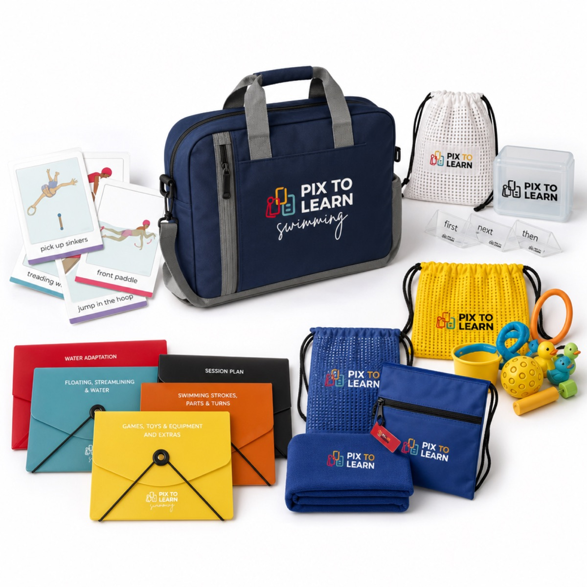
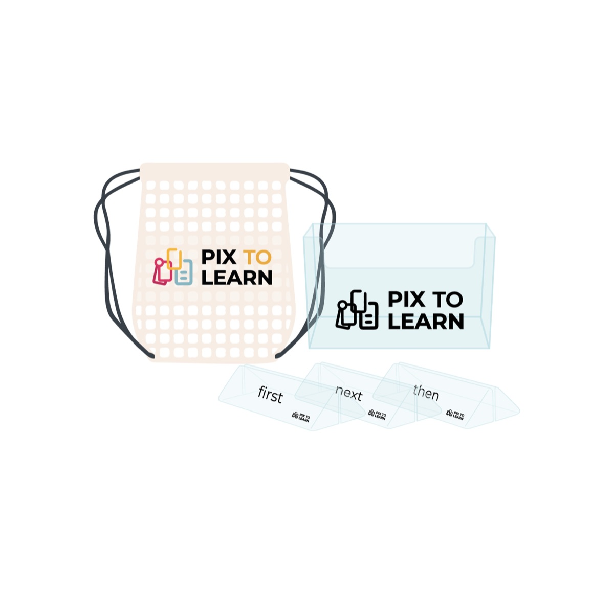
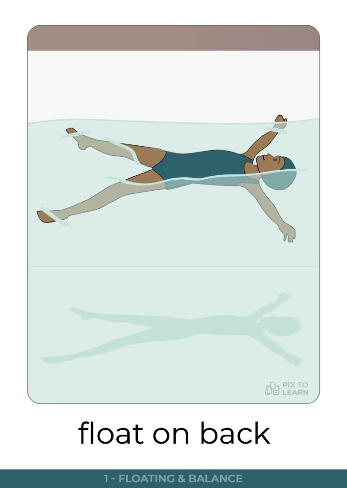
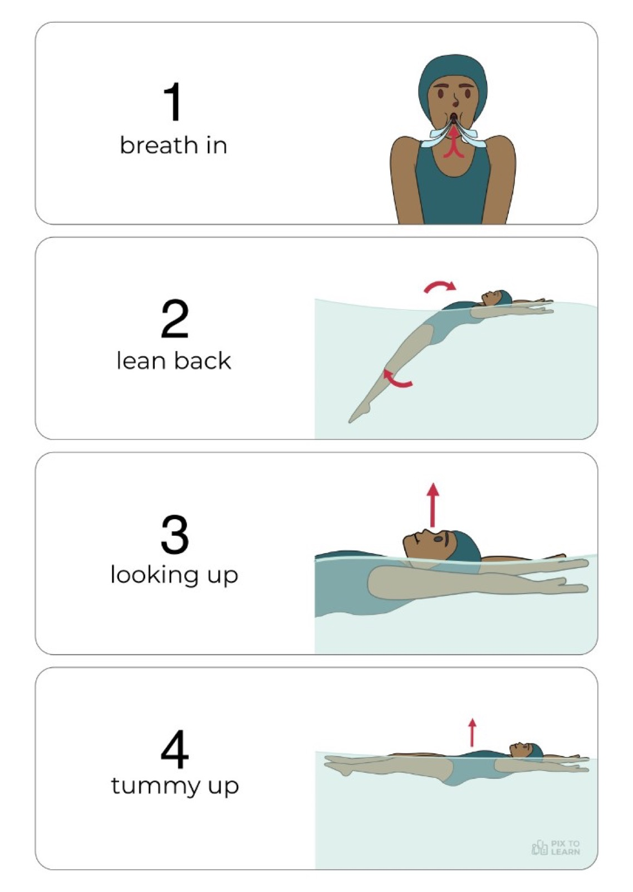
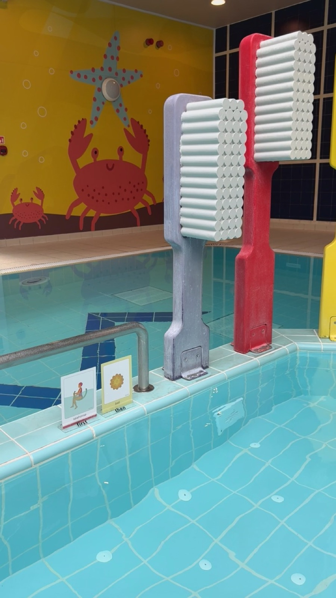
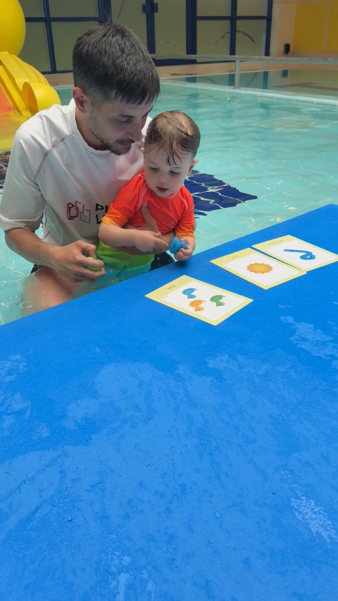

First - Then
Two activities. Ideal when two steps are enough. Use a preferred activity in Then to support a harder First. Then only after First is attempted or completed.
Kit handbook
Your waterproof visual system for clearer aquatic teaching: flashcards, schedules, stands, toys, and a simple way to plan every session.
Every student can learn, just not on the same day, or in the same way.
PixtoLearn believes pictures can carry a message more clearly than words alone. That makes it easier for learners of all ages and backgrounds to join in, stay engaged, and build real skills.
We design tools for professionals and families: less overload, more structure, and a shared visual language that supports independence in the water.
Scan from the QR in your kit. Read on your phone poolside. Start with the flashcard and First / Next / Then. Use the later chapters when you plan fuller sessions.
PixtoLearn Swimming is a resource of 160 waterproof flashcards designed to develop and enhance the aquatic experience for people of all ages, needs, and skill levels.
The cards show simple steps toward aquatic skills and games. They help beginners who are new to water and experienced swimmers who want cleaner technique. The Break it down side is what makes the system teachable at different paces.
Used with PixtoLearn toys and equipment, the cards make essential and complex aquatic skills easier to practice. They support independence in the water and help when spoken language is limited or different for each learner.

Your Full Pack is built for poolside organisation: choose cards, set a visual schedule, teach, then dry and store.
Keep lessons up to date: change, add, or remove cards as each swimmer progresses.
Selected toys used in swimming lessons so learners can practise through play: water bucket, sinkers, pop tube, water pistol, ball, and related equipment cards.

Slide flashcards into the stands. Each stand can hold one or two cards. The holder keeps the cards for one or more sessions tidy and easy to carry.
Every teaching card works as a pair.


Work through any of the Break it down steps needed to achieve the main action. Every swimmer learns at a different pace and needs different support at each step.
Yellow cards represent toys and equipment used in sessions. Use them in any visual schedule, as a main activity, as a motivator, or during break time. For learners with limited language, introduce each card one at a time until it is familiar.
Use Break time when focus drops. On the choosing side, offer preferred toys, games, or activities. Only use choosing when the learner can recognise each icon separately.
Support communication: how the swimmer feels, and where they want to go. The blue side includes yes / no / help / finished for quick exchanges.
Use the erasable marker only on PixtoLearn white cards to:
Visually prepare the end of an activity or session. Some learners need more time to process that a session is finishing. Use Break it down on the reverse if support is needed after finishing. Tell learners how much time remains throughout the session.
Visual schedules help swimmers who need support to understand instructions, manage transitions, and stay independent. Cards supplement your session. Decide when and how to use them from the swimmer's response.

Two activities. Ideal when two steps are enough. Use a preferred activity in Then to support a harder First. Then only after First is attempted or completed.
Three activities. First is usually familiar. Next can introduce a new skill. Then is often highly motivating or Choosing / Break time.
Shows the shape of a longer session. Break it into First-Then or First-Next-Then chunks. End with the Finished card when needed.
Build the schedule with the swimmer when you can. Choosing cards together increases engagement.
Link flashcards so learners achieve more complex results in one continuous action. Select cards for the outcome, teach them individually first, then chain them.
Example: jump in the hoop from poolside, tread water, pick up a sinker, paddle to the side, climb out safely.
Example: float on back, tuck float, soldier float on front, roll, return to standing.
Cards in a sequence must be learned individually before performing them together as one continuous action.
Structure the lesson as entry and warm-up, main activity, then cool-down and exit. Note comments after the session so the next plan stays current.

PixtoLearn Swimming flashcards act as visual support and schedule. They help swimmers follow simple or complex instructions and move from one activity to the next with less friction.
Individuals and groups: beginners, experienced swimmers, learners with special educational needs, and anyone who benefits from clear visual cues. Use in 1:1 sessions, group lessons, or competition preparation.
PixtoLearn Swimming on the website is the short story. This page is the full method for the kit.